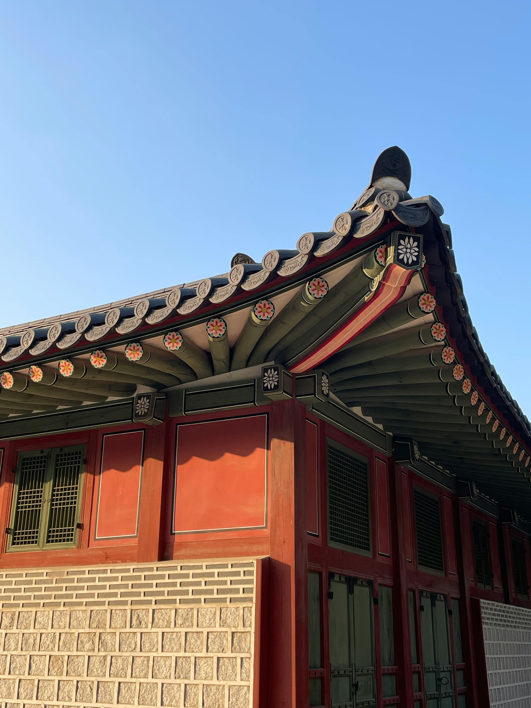

¿Qué es un Hanok?
El Hanok es la vivienda tradicional coreana, desarrollada a lo largo de siglos para adaptarse al clima continental de Corea: veranos calurosos y húmedos, inviernos fríos y secos. Su diseño refleja principios filosóficos de equilibrio y respeto por la naturaleza.
Diseño y Materiales
Características principales
- Techos curvos de tejas (giwa) que dirigen el agua de lluvia
- Patios interiores abiertos (madang) como espacio de vida
- Estructura elevada del suelo para ventilación y protección
- Espacios interiores flexibles y multifuncionales
- Ventanas y puertas de papel tradicional (hanji) que regula la luz
El diseño permite ventilación cruzada en verano y conservación del calor en invierno.
Materiales naturales
- Madera como estructura principal y resistente
- Piedra para bases, cimientos y muros exteriores
- Tejas de arcilla cocida para los tejados curvos
- Papel hanji en puertas, ventanas y divisores interiores
- Tierra y arcilla en paredes y suelos interiores
Estos materiales permiten que la vivienda "respire" y se integre con el entorno.

El Sistema Ondol

Calefacción por suelo radiante
El Ondol es el sistema de calefacción por suelo radiante desarrollado en Corea hace más de 2,000 años. El calor del fuego de la cocina se conduce bajo el suelo a través de canales de piedra, calentando toda la superficie habitable.
Este ingenioso sistema es el antecedente directo de los sistemas de calefacción radiante modernos, y sigue usándose en hogares coreanos contemporáneos.
Distribución espacial
- Sala central (maru): espacio social y de paso
- Habitaciones laterales con suelo Ondol
- Cocina (bueok) con el hogar que alimenta el Ondol
- Patio interior (madang) como extensión de la vida doméstica